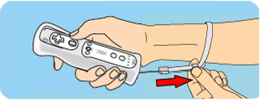

2 |
Usage Precautions |
 |
|
| WARNING - Injury Due to Pre-existing Conditions |
Gameplay with the Wii Balance Board may require varying amounts of physical activity. Consult a doctor before using the Wii Balance Board if:
- you are or may be pregnant,
- you have heart, respiratory, back, joint or other orthopedic conditions,
- you have high blood pressure,
- you have difficulty with physical exercise, or
- you have been instructed to restrict physical activity.
While using the Wii Balance Board, if you experience excessive fatigue, shortness of breath, chest tightness, dizziness, discomfort or pain, STOP USE IMMEDIATELY and consult a doctor.
| CAUTION - Damage to the Wii Balance Board |
Observe the following precautions to avoid damage to the Wii Balance Board:
- Do not use the board if you weigh more than 330 lbs (150 kg).
- Do not jump on the board or use excessive force when operating the game.
- For indoor use only. Do not expose the board to liquids or to extremes of heat or cold.
 Wii Remote Precautions
Wii Remote Precautions
- Wear the wrist strap. Make sure that all players using the Wii Remote are wearing the wrist strap and that it has been tightened using the strap lock. When sharing the Wii Remote between multiple players, please be sure each person using the Wii Remote takes the time to properly put on the wrist strap. Wearing the wrist strap will help prevent the Wii Remote from flying across the room if you accidentally let go of it during gameplay.


- Hold the Wii Remote firmly and do not let go. Even while wearing the wrist strap, make sure you don't let go of the Wii Remote during gameplay and do not use excessive motion. For example, in Wii Sports bowling, the proper way to let go of the ball while bowling is to release the B Button on the Wii Remote—DO NOT LET GO OF THE Wii REMOTE ITSELF. If you are having so much fun that you start perspiring, take a moment to dry your hands. If you use excessive motion and let go of the Wii Remote, the wrist strap may break and you could lose control of the Wii Remote. This could injure people nearby or cause damage to other objects.
Additional Information on Using the Wrist Strap
Wii gameplay with the Wii Remote and Nunchuk can involve rapid or vigorous motion. Please use the wrist strap to prevent losing your grip on the Wii Remote and causing damage to the Wii Remote and surrounding objects, or injury to other people.
- If you are using the Nunchuk, feed the cord on the wrist strap through the connector hook.
- Insert the Nunchuk plug into the External Extension Connector on the bottom of the Wii Remote.

- Make sure the wrist strap cord runs through the connector hook.
Play Area Precautions
Give yourself plenty of room. You will probably move around while using the Wii Remote, so be careful that all areas that you might move into are clear. Make sure that furniture, objects and people are out of the play area so you don’t accidentally bump into them while playing. Also, as indicated in the Wii Operations Manual, it is recommended to stay at least three (3) feet from the television.


This information is available at www.nintendo.com/healthsafety.
 |
 |
 |